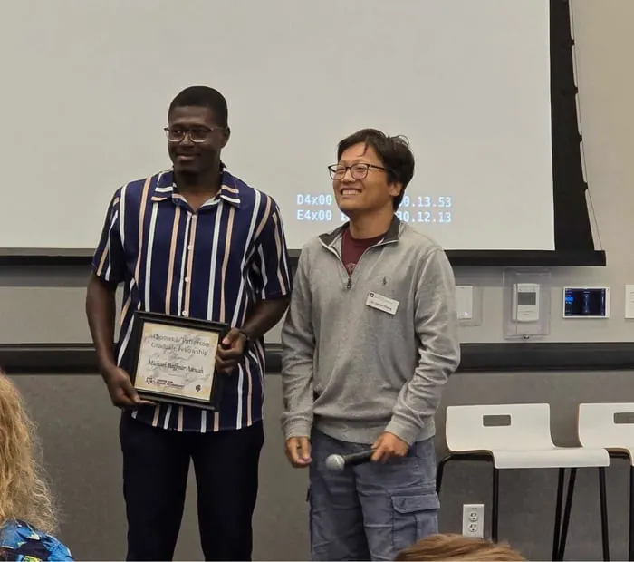

Michael Baffour Awuah
I study how phage N4 decides when to kill its host — and found a new regulator of that decision.
Experimental phage biologist: lysis inhibition in bacteriophage N4, worked with molecular biology, genomics, and genetics — plus the open tools that make it reproducible.
↓ Download CVGraduating 2027 and open to postdoctoral positions, biotech R&D, AI for science, translational research and scientific software — wherever the problem is hardest. Get in touch.
Recent news
- The Serwaa genome announcement is out in Microbiology Resource Announcements. doi:10.1128/mra.01222-25
- Preprint posted: Phage N4 uses a SAR endolysin–holin system for host cell lysis. doi:10.1101/2025.11.12.688109
- Awarded the Thomas L. Patterson Graduate Student Fellowship for the discovery of a novel lysis regulator in phage N4.
- Judged the Texas Junior Science & Humanities Symposium.
- Judged the SACNAS Diversity in Science Symposium.
- Talks on N4 lysis inhibition at the Bio & Chem Sciences Symposium and the Texas ASM Branch Meeting.
At a glance
Phage Biology
Lysis mechanisms in bacteriophage N4.
📈Playground
Tune phage parameters & watch the curve.
🧰Open Tools
16+ shipped tools for lab & bioinformatics.
🏆Recognition
Awards, outreach, mentoring & service.
About Me
Howdy! I'm a PhD candidate in Microbiology at Texas A&M University, working in the Ramsey Lab and affiliated with the Center for Phage Technology. My work lives at the intersection of virology, molecular biology, and computational genomics — plus a stubborn habit of building software to make all of it faster.
My primary project decodes lysis inhibition in bacteriophage N4 — the phenomenon where the phage strategically delays host cell lysis to transform each infected bacterium into a high-output viral factory (up to ~3,000 viral particles per cell within 3–6 hours). By reverse-engineering these decision-making systems, I aim to power high-titer phage production for therapy and programmable microbial biofactories.
Alongside the wet lab, I build open-source tools — increasingly with AI in the loop, which lets me go from a lab annoyance to a shipped, working tool in days rather than months. Not because they'll go on my CV, but because writing the same ggplot2 boilerplate twelve times will make anyone snap. Every tool here was built to solve a real problem I or someone next to me hit. Most are browser-based, privacy-first, and zero-install.
As I approach the completion of my doctoral studies (defending 2027), I'm looking for the hardest, most interesting problem someone will let me work on. That means postdoctoral positions where the biology is genuinely unsettled — phage–host decision-making and the mechanisms nobody has a clean model for — and equally biotech R&D, AI-for-science startups, translational research labs, or scientific software teams. I care about the difficulty of the question more than the sector it sits in.
Outside the lab I play soccer most weeks, grew up on the Black Stars, and built a starting XI out of the skills this PhD runs on because the metaphor was sitting right there.
Education
- Ph.D., Biology (Microbiology) Dissertation: Delaying the Inevitable — Lysis Inhibition in Bacteriophage N4. Advisor: Dr. Jolene Ramsey.
- B.Sc., Biochemistry (Second Class Upper Division) Dissertation on the physicochemical, functional and nutritional analysis of juice blends from underutilised tropical fruits. Advisor: Dr. Jerry Ampofo-Asiama.
Technical skills
Molecular virology
Molecular biology
Protein & microbiology
Genomics & computation
The headline finding
Bacteriophage N4 deliberately delays lysing its host, turning each infected cell into a high-output virus factory that yields up to ~3,000 particles in 3–6 hours. My first-author preprint shows N4 lyses through a SAR endolysin–holin system and maps genomic regions — inside and outside the lysis cassette — involved in holding lysis off. Separately, my thesis work identified a novel regulator of that decision; that manuscript is in preparation. The question isn't when a phage kills; it's whether to give up the cell — and N4 keeps choosing to hold on.
Where I'm taking it → Reverse-engineering this timing switch into a control knob for high-titer phage production and programmable microbial biofactories, while shipping the open analysis tools that make those experiments reproducible for the whole field.
Phage Biology
Investigating lysis inhibition mechanisms in bacteriophage N4 and decoding how phages make temporal decisions during infection.
› what this meansThis is my thesis. The published half: N4 lyses through a SAR endolysin–holin system, with genomic regions in and beyond the lysis cassette involved in delaying it (preprint). The half still in preparation: a novel regulator of that timing decision — the work the Patterson Fellowship recognised. Together they reframe the question from when a phage kills to whether it gives up the cell.
Molecular Engineering
Engineering phage-based systems for high-titer production and developing programmable microbial biofactories from reverse-engineered viral machinery.
› what this meansCloning, targeted knockouts, and protein expression to test which N4 genes gate lysis timing, and to turn that switch into a knob for high-titer phage production.
Computational Analysis
Using RNA-seq, differential-expression analysis, and reproducible R/Python pipelines to read the transcriptomic landscape of phage–host interactions.
› what this meansMapping the N4 infection transcriptome with RNA-seq and DESeq2, wrapped in reproducible pipelines I package as tools so the analysis runs the same way every time.
Phage Discovery
Isolating and characterizing novel bacteriophages from the environment with classical microbiology, TEM, host-range profiling, and full genomics.
› what this meansFrom plaque to TEM to full genome. This is how I isolated and characterized Serwaa, the novel phage behind my first paper, named after my grandmother. My undergraduate mentee Annie Koh joined the work and carried much of it with me.
Phage Lifecycle — at a glance
Click a stage to learn what's happening inside the cell.
Lysis Curve Playground
Run a phage infection and watch it unfold, stage by stage. A normal phage bursts on cue. N4 senses superinfection and holds the cell hostage, keeping the culture cloudy. Drag the controls, then hit play.
The phage docks onto a receptor on the cell surface and injects its genome. The host is now infected.
Research Software
Small tools I build to automate my own research, then share because other labs hit the same walls. From lysis-curve analysis to sequence prep. Browser-first, privacy-first, reproducible by default. Non-science side builds live here →
Now Playable
An educational mini-game about phage–host interactions — finished, and playable right here.
TailFiber a scientifically-grounded phage simulator
Dock to the right receptor. Dodge antibodies, complement, and macrophages. Outpace CRISPR. Evolve your tail fibers. Burst.
A small browser game that compresses the real biology of phage adsorption, infection timing, and host defense into something a microbiologist nods at and a 12-year-old loses an hour to. Built to double as outreach material — Darwin Day, K–12, conferences.
Beyond the bench
Web apps built outside my research — all free, browser-based, and privacy-first. Each card links directly to the tool and to a blog post explaining how and why I built it.
Teaching & Mentoring
Nine courses taught across two universities, and ten undergraduate researchers trained at the bench.
Courses taught
| Course | Students | Term | Institution |
|---|---|---|---|
| BIOL 111 — Intro Biology I | 48 | Fall 2022 | Texas A&M |
| BIOL 112 — Intro Biology II | 48 | Spring 2023 | Texas A&M |
| Enzyme Action & Catalysis | 169 | Fall 2021 | U. Cape Coast |
| Biochemical Techniques (Mini Project) | 5 | Fall 2021 | U. Cape Coast |
| General Biochemistry Practical | 209 | Fall 2020 | U. Cape Coast |
| Biological Oxidation & Bioenergetics | 169 | Fall 2020 | U. Cape Coast |
| Biochemical Techniques I | 150 | Fall 2020 | U. Cape Coast |
| Diversity of Living Organisms | Class of 2023 | Fall 2020 | U. Cape Coast |
| Biostatistics | Class of 2022 | Fall 2020 | U. Cape Coast |
Microteaching mentor for incoming teaching assistants, Department of Biology, Texas A&M (2023 & 2024).
Undergraduate researchers mentored
- Annie KohCharacterization of three E. coli 4s phagesTexas A&M
- Philip LotaireN4 lysis inhibition, host specificity & receptor discoveryTexas A&M
- Matthew FanMechanism of action of bacteriocinsTexas A&M
- Teja VemulapalliBacteriophage N4 lysis inhibitionTexas A&M
- Bridget Ahema AgyemangPhytochemical evaluation of Garcinia kolaU. Cape Coast
- Bertha Klenam HamenuPhytochemical evaluation of Garcinia kolaU. Cape Coast
- Ekow EtwirePhytochemical evaluation of Garcinia kolaU. Cape Coast
- Samuel OfosuPhytochemical evaluation of Garcinia kolaU. Cape Coast
- Emmanuel LuriPhytochemical evaluation of Garcinia kolaU. Cape Coast
- Christian OkinePhytochemical evaluation of Garcinia kolaU. Cape Coast
Judge, Texas Junior Science & Humanities Symposium (Jan 2025) · Judge, SACNAS Diversity in Science Symposium (Apr 2024).

August 2025 · FellowshipThomas L. Patterson Graduate Student Fellowship
Awarded by the Center for Phage Technology at Texas A&M — established by Dr. Steffanie Strathdee and Dr. Thomas Patterson following CPT's landmark involvement in phage therapy in the US.
Read announcement ↗Invited Lectures & Talks
Three oral presentations on phage N4 lysis inhibition: the Bio & Chem Sciences Symposium, the Texas ASM Branch Meeting, and BIOGSA.
See gallery ↓Graduate Mentor — Texas A&M
Four undergraduates have worked with me during my PhD — Annie Koh, Philip Lotaire, Matthew Fan and Teja Vemulapalli — and ten in total, counting six I mentored at Cape Coast. Two continue with me in the Ramsey Lab today; one is now in a biology PhD program; one is applying to medical school.
Get in touch ↗Darwin Day Outreach
Public-facing science outreach demonstrating phage biology and evolutionary microbiology to K-12 students and the broader community at Texas A&M's Darwin Day events.
Texas JSHS Judging
Judge for the Texas Junior Science & Humanities Symposium — evaluating high-school research projects and providing feedback to the next generation of scientists.
SACNAS Diversity in Science Judge
Judge at the SACNAS Diversity in Science Symposium — evaluating undergraduate and graduate research presentations and supporting underrepresented scientists.
Travel & Conference Awards
Molecular Genetics of Bacteria & Phages Meeting registration waivers (2024 · $525; 2023 · $500), and the BIOGSA Engagement Scholarship (2023 · $250) from the TAMU Department of Biology.
Community & Phage Outreach
Darwin Day demos, Phage Princess & Phage Pirate cardboard outreach, K–12 visits, and microteaching mentorship for new TAs in the TAMU Biology department.
Off the Pitch
I play soccer. Badly, enthusiastically, and most weeks — which turns out to be the same way I do science.
I grew up on Ghanaian football, which means I grew up on hope with a very specific shape to it. The Black Stars teach you early that talent is not the same as a result, that the run someone makes off the ball is usually what created the goal, and that you can play beautifully and still lose on penalties. Reasonable preparation for a PhD.
These days it's pickup games in College Station — a squad that speaks about six languages and agrees on nothing except that the last goal was offside. It is the only part of my week with no reviewers.
The habits transfer more than I expected. You play the pass that's on, not the one you rehearsed. You spend most of the match without the ball, which is exactly like waiting on an overnight culture. And the players worth having around are the ones who track back when the experiment fails, not the ones who only turn up for the result.
The gold, green and red on this site is the Ghanaian flag, not a coincidence.
Life in the Lab
Whiteboards, the bench, conferences, and outreach. The science doesn't happen in a vacuum.
Press ⌘K to jump anywhere on the site, or just send me a phage joke.